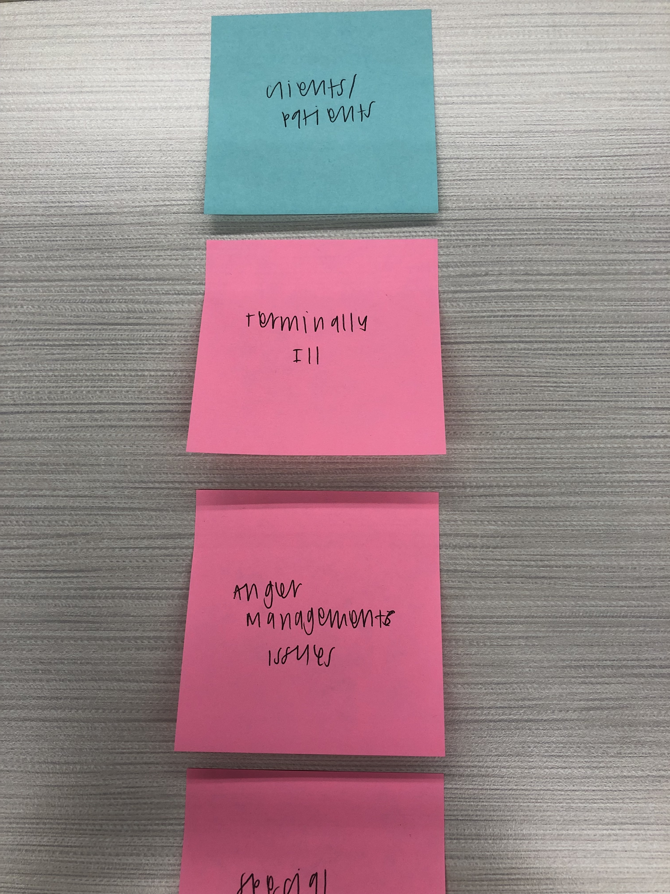
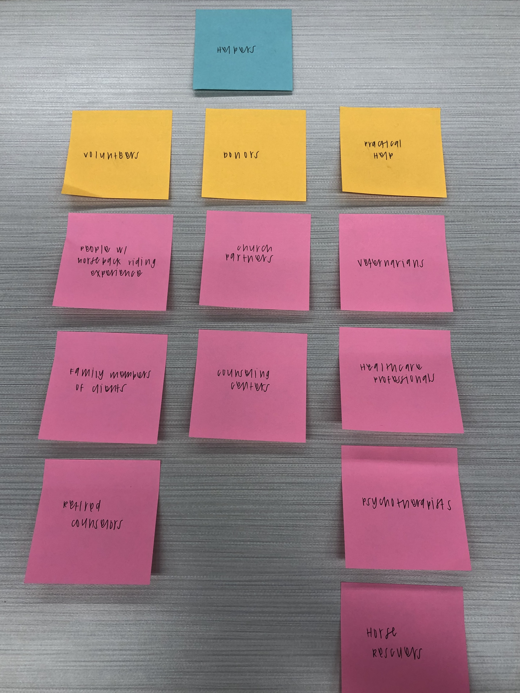

Audience and Goals
After researching Mending Strides Ranch and interviewing the founder, I determined the key audiences and their corresponding goals.
Audience
In order to make the Mending Strides website as effective as possible, I determined the people groups that are involved with and/or reached by Mending Strides.
I started by determining client and patient groups that utilize Mending Strides. These include individuals who: are terminally ill, have anger management issues, are working to overcome substance abuse, have served in the military, and have special needs.
I then created a second audience sector for those who give towards Mending Strides. I divided that into those who give their time (volunteers), those who give their money (donors) and those who give resources or expertise (practical help).
The volunteer group included people with horseback riding experience, family members of clients and retired counselors. The donor group included church partners and counseling centers. Those who offer practical help included veternarians, healthcare professionals, psychotherapists and horse rescuers.
Goals
In order to effectively reach each key audience group, I developed a sets of goals for the client, audience, and website.
Overarching Goals
Client
- Provide services to trauma patients/clients
- Gain donations
- Raise awareness/inform about Equine Assisted Psychotherapy
- Rescue horses
- Sign up for treatments/camps
- Volunteer
- Gather information about Equine Assisted Psychotherapy
- Give monetary or non-monetary resources
- Provide client/volunteer forms
- Inform about Equine Assisted Psychotherapy and Mending Strides' services
- Raise money
Audience
Website
Specific Goals
| User | Goal | Content/Action |
|---|---|---|
| Parents of children who are sick or who have experienced trauma | Help their kids | Sign up for treatment/camp, print forms, learn more about EAP |
| Counselors | Gain awareness, use their skills, or learn more about Equine Assisted Psychotherapy | Volunteer, donate, print forms, or learn more about EAP |
| Horseback Riders | Use their skills or find a place to interact with horses | Volunteer, donate, print forms, or learn more about EAP |
| Spouses of veterans | Find help for their spouse's PTSD | Sign up for treatment, print forms, or learn about EAP |
| Churches | Help people or learn about the community | Donate, volunteer, print forms, or become a partner |
| Social Workers | Gain awareness and help the kids they work with | Learn about EAP, sign kids up for treatment/camp, print forms, or donate |
Conclusion
I combined the knowledge I gained from my primary and secondary research as well as the information I received from my interviews to determine the goals of the key audience members for the Mending Strides site. Having this information allows me to create a website that provides the best possible solutions for each visitor.